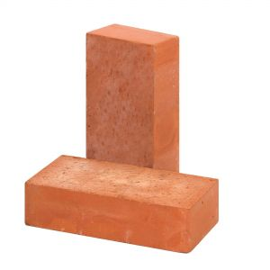
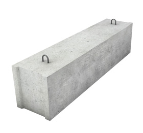
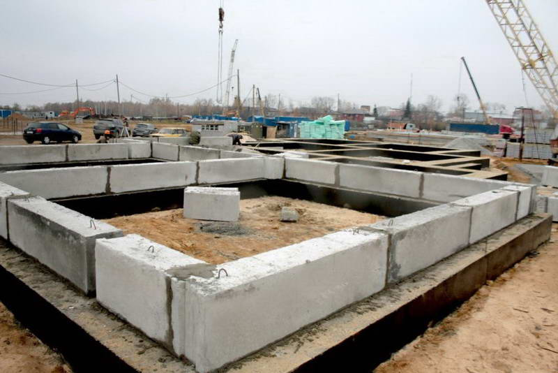

Стройматериалы
Кирпич керамический
Кирпич — искусственный камень правильной формы, используемый в качестве строительного материала, произведённый из минеральных материалов, обладающий свойствами камня, прочностью, водостойкостью, морозостойкостью. Керамический кирпич — кирпич, полученный путем обжига в печи глин и их смесей.
Компания ООО «Эль–Бетон» предлагает к реализации кирпич керамический напрямую от завода изготовителя: ОАО «Минский завод строительных материалов». Весь ассортимент продукции заводского изготовления и высокого качества.
По многим характеристикам керамический кирпич превосходит другие строительные материалы для возведения стен и перегородок, также кирпич занимает достойное место среди облицовочных материалов. Только правильное производство и соблюдение технологий позволяют получить продукцию с высокими эстетическими и эксплуатационными качествами. Кирпич – это гарант прочности и долговечности Вашего дома. Дом – возведенный из кирпича зимой хорошо удерживает тепло, а летом сохраняет прохладу.
Блоки ФБС
| № | Наименование товара, размеры (ДxШхВ), м | Ед. изм. | Вес, кг | Объем, м3 | Цена c НДС, руб. | |
| 1 | Блоки ФБС 2.4-0.3-0.6 | шт. | 980 | 0,432 | 350 000 | |
| 2 | Блоки ФБС 2.4-0.4-0.6 | шт. | 1280 | 0,576 | 450 000 |
Блоки фундаментные ФБС — железобетонное изделие, в форме параллелепипеда. Блоки имеют заводскую маркировку: например, ФБС 24–4–6, где 240 см – длина, 4 – толщина (40 см) и третья цифра — высота изделия (60 см). Монтаж осуществляется с помощью имеющихся петель, с торцевых сторон имеется паз, который заполняется бетонным раствором при монтаже для сцепления с соседними блоками. ФБС — это надежность и долговечность любых строений.
Преимущества блоков ФБС:
— Высокая прочность и надежность. Благодаря отлично разработанной технологии изготовления и высококачественному сырью, они выдерживают большие нагрузки, морозоустойчивы, стойки к воздействию воды и влажной атмосферы, а также к температурным перепадам, и поэтому могут использоваться как несущие конструкции даже в самых сложных случаях.
— Экономичность. Процесс их монтажа может быть существенно механизирован, что дает возможность снизить себестоимость любого строительства на 10–15%.
— Большие возможности для осуществления работ. Использование данных блоков дает возможность осуществлять строительство даже в «холодный» временной период.
— Быстрые сроки и высокое качество. Данные изделия позволяют возводить любой фундамент за короткое время и на высочайшем профессиональном уровне.
Фундаментные блоки используют:
— при закладке фундамента разнообразных сооружений любого назначения;
— для строительства не отопляемых зданий: подвалов, гаражей, складов, технических и цокольных этажей, подсобных помещений и т.д.